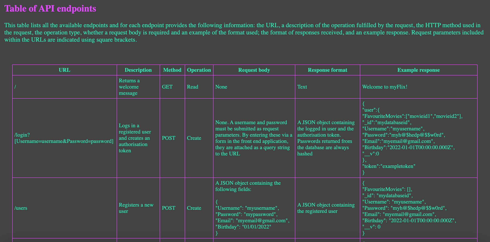
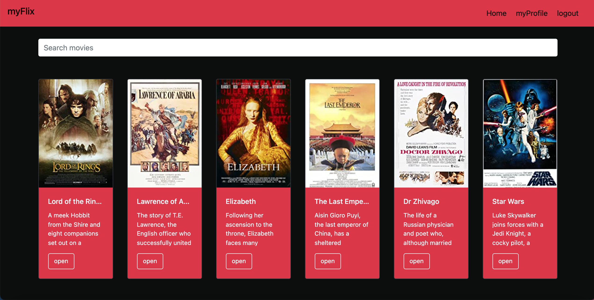

Projects
Pokédex

Pokédex is a simple, responsive web application built using HTML, CSS and JavaScript that uses data from an external API to create a directory of Pokémon. Users can scroll through the directory and click on a Pokémon to view further details, which are displayed in a custom modal.
Project objectives: Use HTML, CSS and JavaScript to build a small application that consumes data from an external API, enable viewing of data points in detail, use CSS to implement styles appropriate to the project theme.
Technologies: JavaScript, HTML, CSS.
myFlix
myFlix is a REST API that interacts with a non-relational database to provide a complete back end for a movie web application. A variety of CRUD operations can be performed on the data by sending HTTP requests to the API endpoints.
Project objectives: Build an API using Express and MongoDB, implement data schemas and models, protect the API endpoints use authentication and authorisation strategies.
Technologies: Node, Express, Mongoose, Passport, jsonwebtoken, MongoDB Atlas, Heroku.
myFlix-client
Description
Meet app

Meet app is a serverless, progressive web application that uses the Google Calendar API to provide information about events for full-stack developers.
Project objectives: build a simple React app using a test-driven approach, set up and configure a cloud-based server to perform user authentication and authorisation using OAuth2.0.
Technologies: React, Jest, jest-cucumber, Enzyme, Serverless, Googleapis, Axios. AWS Lambda was used as the cloud service provider.
ChatApp

Description
myFlix-Angular-client

Description